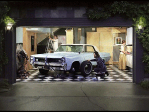

Lewis deSoto Download the press release (PDF) |
 |
For the first time in its new building, the San Jose Institute of Contemporary Art (ICA) will fill its three galleries with the work of one artist. On January 31st, the ICA will present Lewis deSoto: BEFORE AFTER, the first comprehensive exhibition of work by mid-career conceptual artist Lewis deSoto. The show runs through March 28th and includes a selection of works on paper, photography, sculpture, sound pieces, and an immersive, chocolate-scented installation entitled End of Desire. An opening reception with the artist will be held at the ICA on Friday, February 6th from 6pm to 8pm.
ICA visitors who attend the February 6th opening event will be treated to a special one-night-only presentation of Conquest, the artist’s counterfeit DeSoto automobile, which will be parked outside the ICA. The custom-built car is based on a 1960’s Chrysler platform and has been interpreted by deSoto with redesigned instruments, wheel covers, roof design, monikers, upholstery, color schemes and mechanical characteristics. DeSoto created the project to trace the ironic threads of the name DeSoto: automobile, conquistador, himself and his culture.
Lewis deSoto has been exploring personal narrative through his artwork for over 20 years using an extraordinary range of media. “The ICA is excited to shine a light on the incredible depth and breadth of deSoto’s work and pay tribute to an artist at the top of his game,” says Cathy Kimball, ICA Executive Director and Chief Curator. “Gallery visitors will be awestruck by the creative range of the work and the unique immersive nature of the exhibition experience.”
DeSoto’s multimedia installations combine sound, light, video, space, and sculpture elements and are site-specific or oriented toward making a complete environment. His conceptual artwork utilizes automobiles, inflatables, electronics, photography, wood and metal construction. Two particularly intriguing works in the exhibition include a sound piece and a large chocolate-scented installation. The sound piece titled Lament, uses the acoustics of the ICA’s exit corridor to create an immersive sound-filled environment created by the artist’s collaboration with opera singer Erin Neff singing excerpts from the Hermann Hesse poem “(Klage) Lament.” The large-scale End of Desire installation includes a long wooden pier surrounded by cocoa bean shells spread out on the floor, creating an organic landscape. Standing on the platform, enveloped by the potent smell of chocolate, participants are left to ponder the nature of desire. This work follows earlier projects that used fragrance to communicate the artist’s narrative.
The ICA’s Focus Gallery will include three sculptures that pay homage to deSoto’s father as well as a series of works on paper based on the 1920 novella by Herman Hesse titled “Klingsor’s Last Summer.” A series of photographs called BASHO (meaning “place” in Japanese) represents deSoto’s first one-person photography exhibition in 1978. And using the paintings of Johannes Vermeer as inspiration for The Restoration, deSoto remodeled a garage to resemble a Vermeer interior. In it, he placed figures in contemporary and 17th century period garb surrounding a 1964 Pontiac Grand Prix to stage a scene that floats between photographic, painterly and cinematic forms.
DeSoto’s conceptually driven artwork brilliantly combines the past and present, and posits about the future. Culling from a range of influences including anthropology, sociology, history, religion, literature, music and personal memory, he utilizes a variety of media to provide commentary on his personal histories as they apply to contemporary culture.
The ICA’s Talking Art discussion forum on March 12 will feature the artist discussing the exhibition within the context of his larger body of work. The session begins at 7pm and is open to the public. Admission to Talking Art is free for ICA members and non-members are charged a nominal entrance fee.
Lewis deSoto was born in San Bernardino, CA and received his MFA at the Claremont Graduate University. His work is included in numerous public collections including the Des Moines Art Center, the Los Angeles Museum of Contemporary Art, the Museum of Modern Art, San Jose Museum of Art, The Museum of Contemporary Art, San Diego, and the Seattle Art Museum. DeSoto lives in Napa and is a professor of photography at San Francisco State University.
# # #
San
Jose Institute of Contemporary Art 560 South First Street San Jose, CA 95113 tel (408) 283-8155 fax (408) 283-8157 |